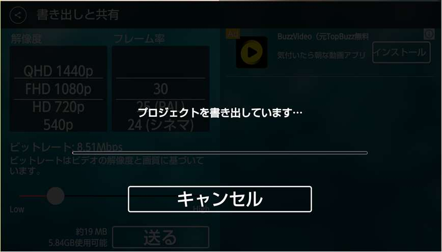
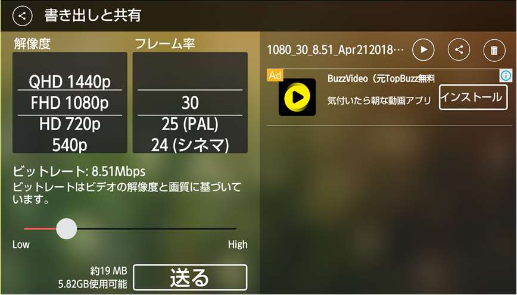

| How to use KineMaster nodrm | |
| Unknown | |
本格的動画編集・直感的操作
モバイル専用 高機能 動画編集アプリ
HOW TO USE
KineMaster
作成者：John SunlineX
キネマスター
【はじめに】
まず初めにお詫び申し上げておきます。
本文中は、説明文が長くなるを以て、大変失礼ながら、所々、上から目線で「であ
る調文体」になっております。
この本は John SunlineX が自分の編集スキルを以て作成した 初心者・中級レベ
ル者向けの KineMaster ハウツー本 です。
拠って、説明に何某かの間違いがある可能性は捨て切れません。
また、説明の内容が前後、重複しており、見づらいところがあります。
ご購入に際し、そこらをご納得が上でお買い求め頂ければと思います。
すべての文責は、John SunlineX にありますが、それを以て、購読者に何某かの
責任を負うものではありません。
この本は、どこまでも個人趣味で出版されたものです。
ここにある説明での編集作業は、個人の責任において為されることを願います。
「KineMaster のロゴマーク」 及び 一部の「ホームページ資料」使用については、
KineMaster Japan 様より、使用許可を頂いております。
作成者： John SunlineX
プロフェッショナルな品質のモバイル動画編集
https://www.kinemaster.com/
◆FaceBook： https://www.facebook.com/KineMaster.JP/
◆YouTube： https://www.youtube.com/user/KineMasterApp (グローバル版）
◆Twitter： (@kinemasterjapan) https://twitter.com/kinemasterjapan?lang=ja を御掲載いただけますでしょうか。
「モバイル専用高機能動画編集用アプリ」
使い方ではどんな動画もできる。
「基本的使用法 」
① 空プロジェクト選択
② メディアを選択
• モバイル内部素材やキネマスター標準素材を使用。
• いくつでも取り込める。
③ 取り込まれた動画をクリック
• クリックした時点で表示される様々なエフェクトを利用。
④ 音楽を取り込み
• 取り込む時期は任意。
⑤ レイヤー機能で素材追加取り込み
• 様々な素材を、幾重にも重ねられる。（クロマキー合成可能）
• 動画・画像には透明化を、音楽には音量調節を適用し、見栄え調節をする。
-- 「使える主な機能 」--------
クリップグラフィック ⇒ 素材全体にエフェクト追加。
速度制御 ⇒ 文字通り動画の再生速度を変える。
回転／反転 ⇒ 素材を回転・反転できる。
色合い ⇒ 映像表現色をエフェクトで変えれる。
カラー調整 ⇒ 映像全体の色合いを変えられる。
音量エンペラー ⇒ 音量の高低、フェードイン・アウトなどができる。
オーディオフィルター ⇒ ボイス変更で切る。シリウス、ロボット、ディープなど。
ビネット ⇒ 動画の縁を暗くできる。
---「補足」------------------------
キネマスターを開いたとき、一番下の右端に「家の記号」（素材マーケット）があ
る。そこには多種多様な素材やエフェクトがあり、後から追加可能（無料提供素材
もあり）。
ビデオ音声や追加オーディオに フェードイン・アウト できる機能がある。
プロジェクト設定 ⇒「表示時間設定」で、あらかじめ動画や写真の表示時間などを
決められる。
機能は多種多様で、ここではすべてを詳細に、ご納得頂けるまでに説明できない。
基本的な使い方から、順次アイコンをクリックし、機能を適用しながら、編集画面の
左側にある様々な機能のうちの、「戻す」「進む」 の機能や、素材を削除で用きる
「ゴミ箱」 を使いつつ、スキルアップを目指すとなる。
こんなことが できる


アイコン
（多種多様ゆえに主要なもののみ掲載）
スマホ
アプリスタート画面
プロジェクト開始画面
編集画面トップ＝右側
編集画面トップ＝左側
写真・動画・（音楽）素材編集時
テキスト編集時
常時
その他エフェクト
撮影追加画面
その他エフェクト
レイヤー画面
眺めているうちに直感的に機能理解が進む。
キネマスター
使い方
1. Google Play から「KineMaster」をダウンロードする。
2. モバイルモニターにあるアプリアイコン
をクリックし
アプリを開く。
3. 下の図の状態が表示されるので、その他のボタンを、あらか
じめ、一応、確認しておく。
4. 中央のアイコン
をクリックして編集画面を開く。

キネマスター
【編集開始】
1. 前ページの
アイコンをクリックすると、この画面が表示
される。
2. 編集は、表示の プロジェクト・アシスタント
アイコンか、
あるいは 空プロジェクト
アイコン のいずれかをクリッ
クして始める。
3. ここでは初心者向け「最も簡単な３ステップでビデオができる
方法」に少し手を加えて、動画編集意欲が沸くようにした。
「プロジェクト アシスタント アイコン」をクリックする。
1
タイトル挿入
改行キーが無い場合は
スペース を入れてゆき
編集画面で見栄えを見なが
ら改行にする。
終わったら「次へ」
2
使用素材を選ぶ
ここで
モバイル内部 や KineMaster
標準の コンテンツ（写真か
動画)を選ぶ。
3
ここでは
モバイル内部素材
を使っている。
4
選択素材がタイムラインに
追加されたら「次へ」


テキスト効果 7タイプ 30スタイル以上
① なし
② 基本タイトル効果
③ タイトル効果をもっと見る
④ パワフル
⑤ 感傷的
⑥ 旅行とアニメーション
⑦ さらに取得
アセットストアを開いて取得。
プレミアム素材といくつかの無料素
材とがある。
5
テーマを選ぶ
基本では、エフェクトは後
から自分で追加する。
タイトル／中間／終わりの
文字は入れられる。
初めは基本以外を選んだ方
が分かりやすい。
終わったら「次へ」
6
タイトル・見出し
の設定
タイトル・中間・終わりの
文字を順次入れてゆく。
文章の改行はスペースを入
れながら行う。
⇒説明「26」を参照
終わったら「次へ」
7
BGM設定
ここで、モバイル内部や、
KineMaster標準の 音源 を選
ぶ。
8
★モバイルに音楽が無けれ
ば・・・・
図のように
「アセット」選択で「音楽
を取得」をクリックして、
無料の音楽をダウンロード
し、それを利用する。
9
アセットストアで
素材を選ぶ
自分の音楽がない場合
アセットから選ぶ。
10
素材のダウンロード
ダウンロードが済んだら、
右上のバツ印 をクリックし
て、編集画面に戻る。
11
編集画面
バツ印 をクリックすると、
こんな画面が表示される。
12
音源取り込み
音楽追加アイコン をク
リックして、先ほどダウン
ロードした音楽を編集画面
に取り込む。
ここでは当然にアセットを
選んでいる。
13
レイヤーとは？
レイヤーとは「層」という
意味。画像処理のレイヤー
は目には見えない透明な
シートのようなもので、1枚
1枚の、そこに文字や写真や
動画を貼り付け、透明度を
施し、上から見たとき、重
なっている数枚を1枚ものに
する。
ここでは原稿レイヤー１に
14
矢印レイヤー２が重なって
一枚となっている。
音量調節
動画の音声とダウンロード
した音源のバランス調整を
する。ここでは 100％ を
0％ にしている。
15
動画の音声を重視する場合
は、ダウンロードした音楽
の音を小さくするという使
い方もある。
終わったら
右上のアイコン
をク
リックでエフェクト適応画
面を閉じる。
ボリューム
16
コンプレッサー
オーディオ
フィルター
音量エンペラー
17
音量エンペラー
このアイコンをクリックす
ると画面はこの状態になる。
ここで音声にフェードイ
ン・アウトや高低を付けれ
る。
18
このマークで音量を設定す
るポイントを付けられる。
19
音源の長さ調節
動画編集に合わせて、ダウ
ンロードした音楽の長さも
調節する。
20
長さ調節で音源のカット、
トリムが適用された状態。
作業が終わったら
このアイコンをクリッ
クして、右側の選択画面を
閉じる。
21
音量エンペラー
このアイコンを
クリックすると
画面は、この状態になる。
このアイコンで音声に
フェードイン・アウトや高
低を付ける。
22
このマークで音量を設定す
るポイントを付けられる。
左マーク側を100％にし
右の終わりを0％にして
フェードアウトを適用。
23
動画エフェクトの選択と
初めのキャッチフレーズを
編集する。
24
このアイコンで
使う文字種を
変更できる。
閉じる
25
改行操作
説明「1」や「6」で説明し
た、タイトルや見出しでの
改行操作についての詳細説
明欄。
★テーマ使用時に設定され
た文字の改行は、スペース
を入れながら改行する。
26
★テーマ設定であらかじめ
設定するもの以外の
レイヤーのテキストで追加
された文字は「改行キー」
で改行できる⇒説明「29」
を参照。
27
28
29
タイムラインに
素材追加
レイヤー
このアイコンを
クリックする。
写真・動画素材
30
の追加
動画エフェクト
の追加
アニメーション、
ステッカー、テ
キストなどのイ
メージの追加
31
純然たる打ち込
み文字のテキス
トの追加
手書きで追加
32
ここではレイヤーとして、
テキストを追加している。
次のページでは、その文字
の文字色を変えたり、
エフェクトを追加している。
⇒説明「４」の次のページ
の「多種多様な文字のエ
フェクト」も参照。
33
文字色を変える
文字のスタイルを変えるのは
説明「７」を参照。
①タイムラインに表示された文
字をクリック。
②右上の赤丸をクリックして色
パレットで色を設定。
34
★レイヤーのテキストで追加さ
れた文字は「改行キー」で改行
できる。
文字をクリックした際に文字の
右側に表示されている下の図
はハンドルで
拡大縮小・回転を行う。
拡大縮小・回転を適用したとこ
ろ。
35
★「クロマキー」合成
ここではテキストを重ねたが、
写真や動画も重ねられる。
その時、上のレイヤーの不必
要な部分を、背景の色に合わ
せて、透明化してゆく。
-------------------------------------
L1 ⇒ 一番後ろに来るもの
L２ ⇒ その上に来るもの
L３ ⇒ なにかまた載せる。
追加で素材を載せてゆき、透
36
明化を施し、上から下まで全部
が見えるようにする。
視線
↓ ↓ ↓
レイヤー L３
レイヤー L２
レイヤー L１
という風に見える。
37
動画の前後に
イメージを追加する
このアイコンをクリックし
モバイル素材 か
KineMaster素材
の中から素材を利用する。
38
39
ここではKineMaster素材
を利用している。
これは動画の末尾に追加の
図。
40
これは動画の先頭に追加の
図。
41
イメージ間の
切り替え効果
このアイコンをクリックし
て切り替え効果を適用する。
42
43
素材の長さ調節
先頭、末尾に追加した画像
の長さを調整する。
これは末尾の長さ調整の図。
44
45
素材の長さ調節
先頭、末尾に追加した画像
の長さを調整する。
これは先頭の長さ調整の図。
46
47
素材の長さ調節
追加した音源の位置の調整。
イメージを追加した後
追加イメージ上でも音楽が
鳴るようにしたいときに、
この操作を行う。
48
これは、音楽を、追加した
先頭イメージに合わせてい
るの図。
49
素材の長さ調節
追加した音源の位置の調整。
イメージを追加した後
追加イメージ上でも音楽が
鳴るようにしたいときに、
この操作を行う。
50
これは、音楽を、追加した
末尾のイメージに合わせて
いるの図。
51
編集終了：出来上が
り状況確認
52
プロジェクト保存
53
モバイル保存と共有
54
55
保存解像度
56
57
プロジェクト再編集
原本コピー
プロジェクトを再度編集したい
ときは、原本を保存するために、
コピーしておく。
編集はコピーで行う。
58
作った動画です。
見れないときは、こちらで：https://youtu.be/486CeGnl70c
2018.04.に
KineMasterのデザイン・仕様が 一部変わりました。
主たる変更は「プロジェクト保存」と「共有」です。
以前に比べて見難い、分かり難いかもしれませんが、ここで「新 NO.」
(52～60) の説明をご覧になられながら、学んで下さい。
新
プロジェクト保存
52
新
モバイル保存と共有
53
背景に流れる動画によって
デザイン的に見ずらいが、
ここに「保存」ボタンがあ
る。
見難いを以て、またデザイ
ン変更があるかも知れない
が、基本的な操作は同じ。
新
54


新
保存解像度
55
この部分をスライドしなが
ら選択する。
YouTube等にアップする場合
は720p以上が好ましい。
新
保存 書き出し
56
新
保存データ確認
59
この部分の表示が変わった。
新
60
【 キネマスターが対応しているファイル形式 】
インポート・・データを入れて使えるようにすること
エクスポート・・データを出して保存したりすること
動画
音声
画像
ビデオ
MP4
MP3
JPEG
(H.264
M4A
PNG
Baseline/Main/H
AAC
WebP
igh Profile + AAC
LC / PCM)
WAV
BMP
3GP
イン
(H.264
Baseline/Main/H
ポート
igh Profile + AAC
GIF (画像のみ)
LC / PCM)
MOV
(H.264
Baseline/Main/H
igh Profile + AAC
LC / PCM)
エクス
MP4
(H.264 Baseline
ポート
+ AAC LC)
あとがき
最期までご覧頂きありがとうございました。
大変申し訳なくも、一夜漬けみたいな編集で、レイアウト構成が不味く
て、とても見ずらい点が多々あったと思いますが、どうか、ひとつ一つ
のエフェクトアイコンをクリックされながら、編集画面の変化と、プレー
で、その効果を確認されながら、動画編集をお楽しみ頂けたらと思いま
す。
動画編集は大変楽しものです。
お使い頂いてる中で、KineMasterのアップデートがあるかも知れませ
ん。
その際に、大幅にレイアウト構成が変わるなど劇的な変化がないとも
言えません。
しかしながら、アイコンの形と、その機能を覚えておかれたら、どんな変
更があっても対処できると思います。
動画編集を楽しみながら日々をお過ごし下さいませ。
あなた様の作品が世に共有される日を楽しみに致しております。
ご購入、ありがとうございました。感謝。
John SunlineX